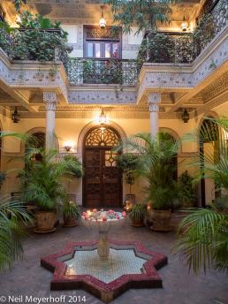

%1
This lion, having just run off a cheetah, is now continuing to track the female thatit is mating with. In the reserves and national parks in southern Africa, the animals often walk right next to the vehicles as they are not threatened by the vehicle. However, it is very unsafe for tourists to exit the vehicles as predators would them see the humans as potential game. Okavango Delta. 1/500@f4.0, 56mm, ISO 400 Click image to enlarge. |
|||
These three children were playing around the market area of Shimla, Himachel Pradesh, India when I saw them in front of this building. Shimla is the former hill station where the British Raj went every summer to avoid the heat and rain of Delhi. This vertical panoramic photograph was taken with a Hasselblad X-pan camera. Click image to enlarge. |
|||
Republic Square, bounded by these rose color buildings on three sides and which is open to the waterfront of Split, Croatia, houses the city council buildings and has been a center of governmental activity since the 15th century.  Click image to enlarge. |
|||
American flag/Statue of Liberty decal on storm door, Broad Channel, Queens. Panasonic DMC-LX3, 12.8mm, 1/1000@f4  Click image to enlarge. |
|||
This tree lined road is typical of the roads found through out France. This road is near Pontorson on the eastern edge of Brittany in western France. This panoramic photograph was taken with a Hasselblad X-pan camera. Click image to enlarge. |
|||
This group of villagers has just arrived at the football pitch were the harvest festival is being celebrated in the tiny village of Azama. They will eventually sacrifice the chickens, much alcohol will be consumed, and fire crackers will be set off. Olympus OMD EM-5, 12mm, 1/200@f8.  Click image to enlarge. |
|||
These three women are walking along the road, near the Andaw Tein temple, with parasols to block the sun from their faces. This is a very idyllic scene created by the late afternoon light in Mrauk U. Olympus OMD EM-5, 35mm, 1/200@f7.1  Click image to enlarge. |
|||
Many buildings in Morocco present a very plain face to the street, but once inside are magnificent. This hotel's entrance is between a tire store and a plumbing supply house, but once you walk down the front hallway into the hotel proper, the beauty is breathtaking. Olympus OMD EM-1, ISO 400, 12mm, 1/4@f2.8 Click image to enlarge. |
|||
Interior of main house at Lunuganga, home of Geoffrey Bawa, one of Sri Lanka's most famous 20th century. architects. Olympus OMD EM-1, 1/40@f4.0, 12mm, ISO 200  Click image to enlarge. |
|||
A panoramic view of grasses and trees in the Jao Concession in the Okavango Delta. Shortly afterwards we were subject to a downpour. Olympus OMD, EM-1, 1/250@f7.1, 40mm, ISO 400 Click image to enlarge. |
|||